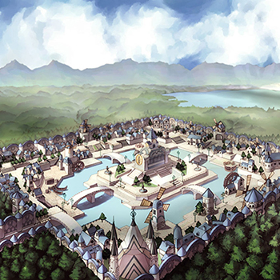
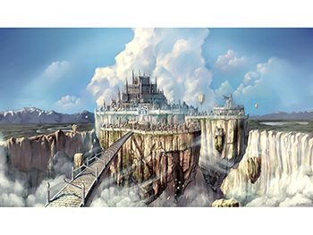

画像にリンクがはってあるものは、クリックすると別窓で大きめサイズが表示されます。
|  |
| アルデバラン |
 |
 |
 |
| アルデバランA | アルデバランB | アルデバラン衛星都市ルイーナ |
|  |
| ジュノー |
 |
 |
 |
| ジュノー | 旧ジュノー | ニダヴェリール |
 |
|
| アインブロック | アインブロック(マップ) |
 |
| アインベフ |
back
(c) Gravity Co., Ltd. & Lee MyoungJin(studio DTDS). All rights reserved.
(c) GungHo Online Entertainment, Inc. All Rights Reserved.
当コンテンツの再利用（再転載・配布など）は、禁止しています。